筋書き別
遊んでいる筋書きを選ぶ
選んだ筋書きの部だけが開きます（URL の #sc= で共有できます）。共通の部（画面の見方・内政・外交・軍事・合戦・城攻め）は下に続きます。
筋書き
長篠の戦い
天正三年（1575年）五月 無料
無料で遊べる筋書き。武田勝頼一万五千が長篠城を囲み、織田・徳川三万八千が設楽原で待ち受ける。守る側（織田・徳川）も、攻める側（武田）も遊べる。長篠のあとも筋書きは続く――天正四年には石山合戦（四つの砦の普請→木津砦→天王寺砦の救援→木津川口の海戦）、荒木村重の有岡城、手取川、そして本能寺へ。
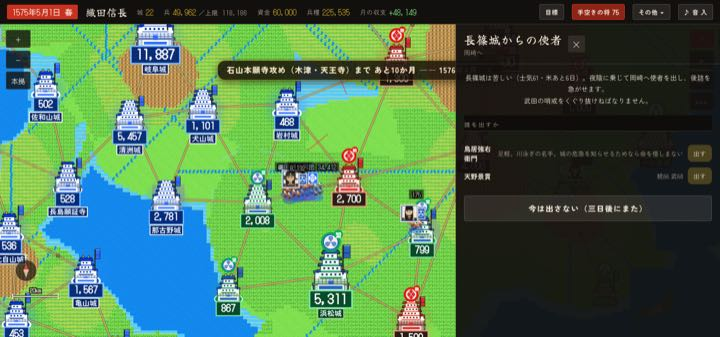
始まりの地図。遊べる家：織田家（織田信長）、徳川家（徳川家康）、武田家（武田勝頼）、上杉家（上杉謙信）、北条家（北条氏政）、本願寺（本願寺顕如）、長家（長続連）、松永家（松永久秀）、三好家（三好長治）、毛利家（毛利輝元）、河野家（河野通宣）、宇喜多家（宇喜多直家） ほか
序盤の指針
- 織田家なら、まず岐阜の兵を集めて後詰へ。決戦までの日数は帯に出るので、遅れなければよい
- 長篠城は落ちるまでに猶予がある。鳥居強右衛門の使者が着けば城の士気が戻る
- 武田家なら、後詰が来る前に長篠城を落とすか、鳶ヶ巣山砦を固める（砦に隊を置く）かを決める
- 軍議は史実の布陣で行くのが安全。慣れたら自分で並べ替える
- 天正四年四月、石山合戦が開幕。三日後に〈石山包囲網〉の札が開くので、野田・守口・森河内・天王寺の四つの砦に将を置く（四つが成ると木津へ。三十日で保険）。砦は近くの城と道でつながっている
- 天王寺砦が囲まれたら救援の軍議。援軍は原田直政の本隊が着いてから。砦が落ちても救援の隊は奪い返しに向かう
合戦の勘所
- 守る側：柵の内から撃つ。鉄砲は三列の柵の後ろ、槍は柵のすぐ内。武田の騎馬が柵に達したら〈一斉射撃〉
- 守る側：鳶ヶ巣山砦へ酒井の別働隊を送ると、砦を落とせば武田の後ろが崩れる。砦の段では〈攻め方〉の軍議、〈火矢〉が使える
- 攻める側：柵の薄い翼（帯に「柵 〜%」）へ足軽を当てて崩し、破れたら騎馬を入れる。正面の鉄砲には寄らない
この筋書きで起こりうる決戦（25）
旗が立つと決戦になる。名を押すと拡大。絵はすべて実際のゲーム画面。
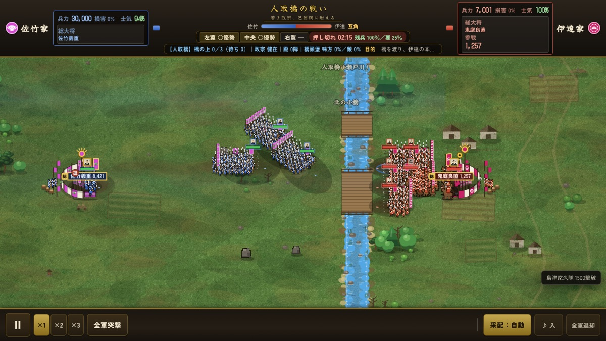
▶ 動く人取橋の戦い
若き政宗、包囲網に耐える
佐竹家 対 伊達家
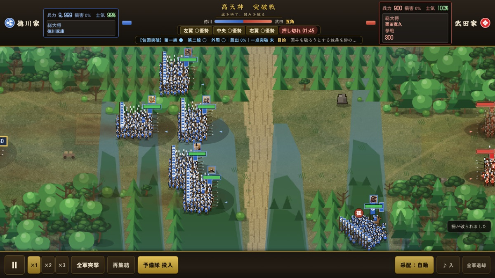
▶ 動く高天神 突破戦
城を捨て、囲みを破る
徳川家 対 武田家
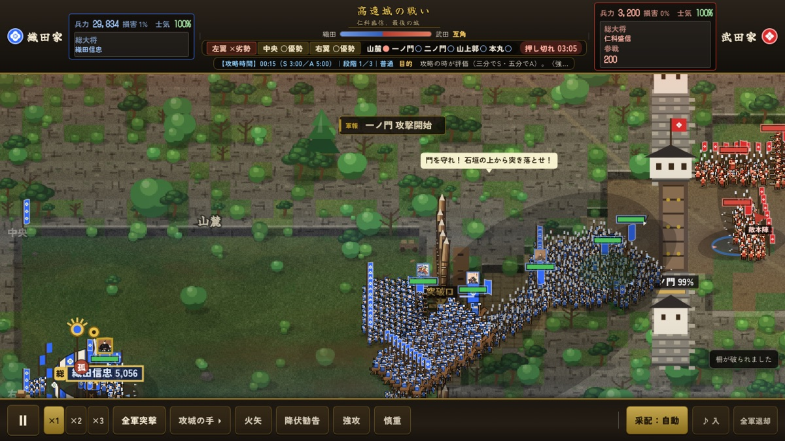
▶ 動く有岡城の戦い
惣構の城、内応と脱出
織田家 対 荒木家
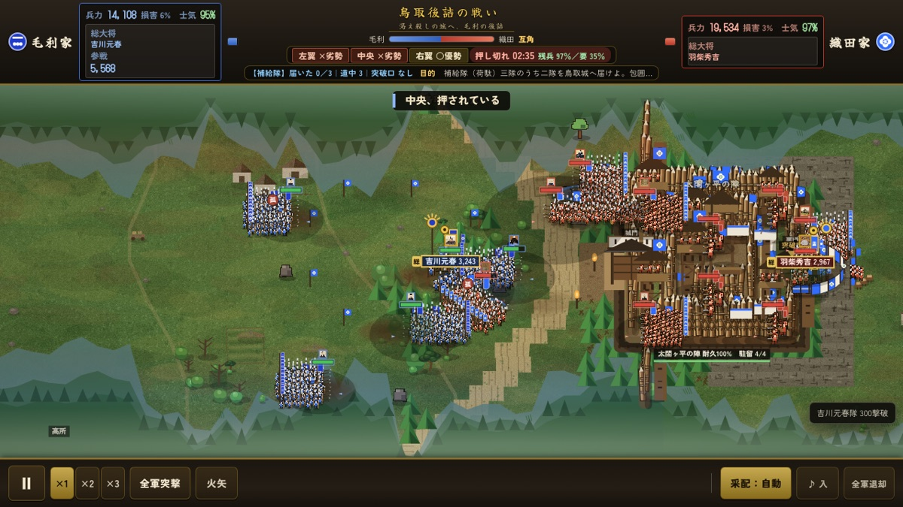
▶ 動く鳥取後詰の戦い
渇え殺しの城へ、毛利の後詰
毛利家 対 織田家
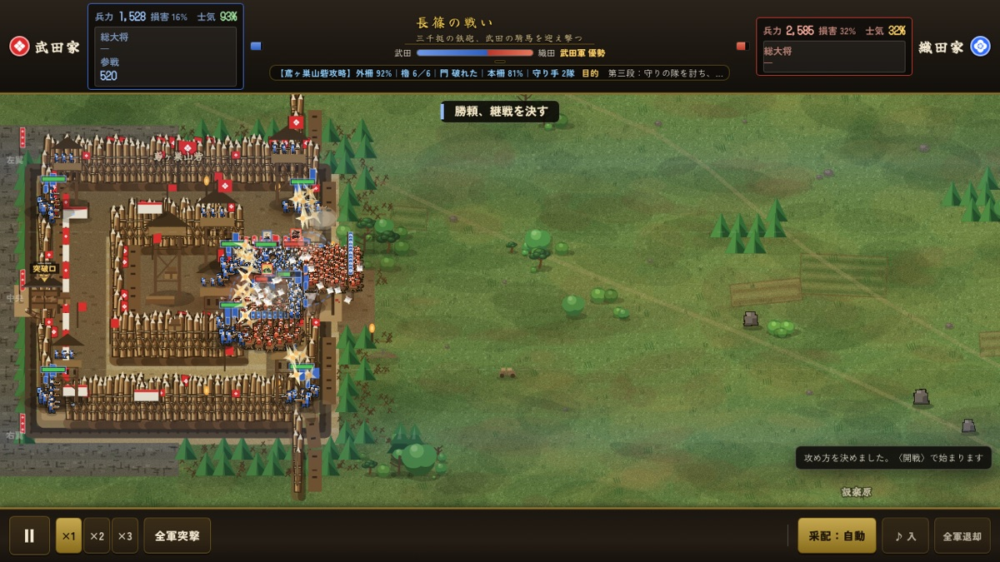
▶ 動く長篠の戦い
三千挺の鉄砲、武田の騎馬を迎え撃つ
武田家 対 織田家
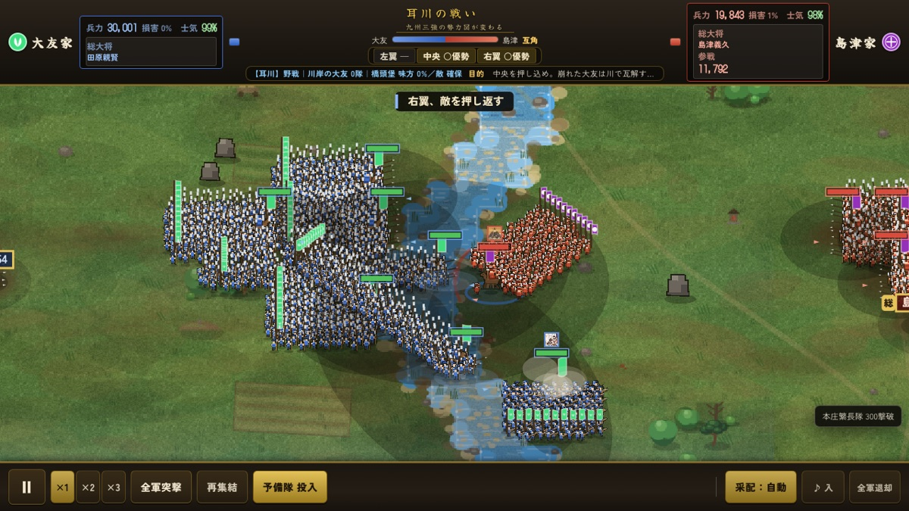
▶ 動く耳川の戦い
九州三強の勢力図が変わる
大友家 対 島津家
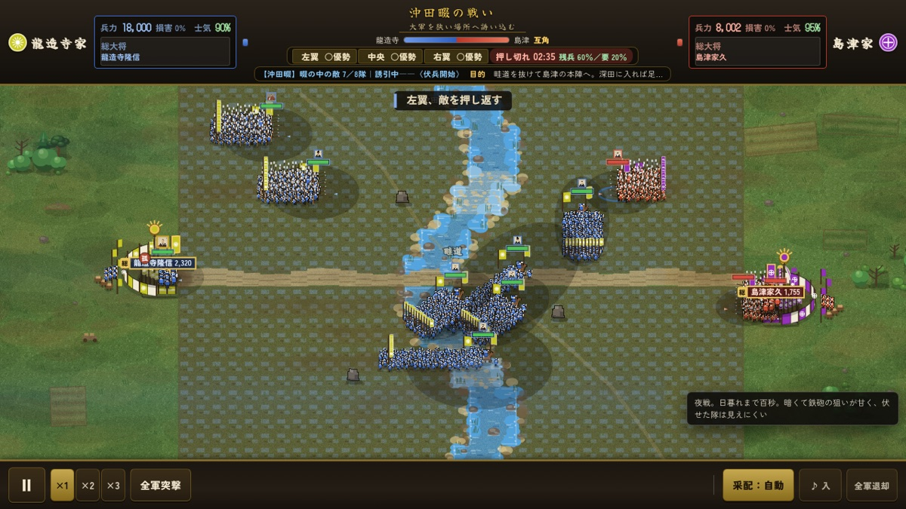
▶ 動く沖田畷の戦い
大軍を狭い場所へ誘い込む
龍造寺家 対 島津家
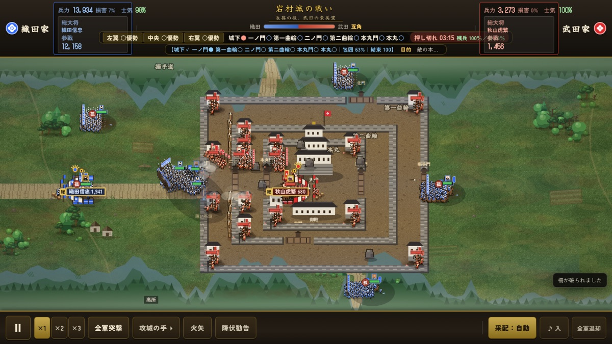
▶ 動く岩村城の戦い
長篠の後、武田の東美濃
織田家 対 武田家
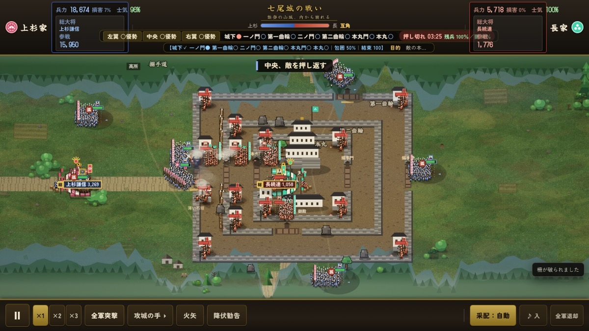
▶ 動く七尾城の戦い
能登の山城、内から崩れる
上杉家 対 長家
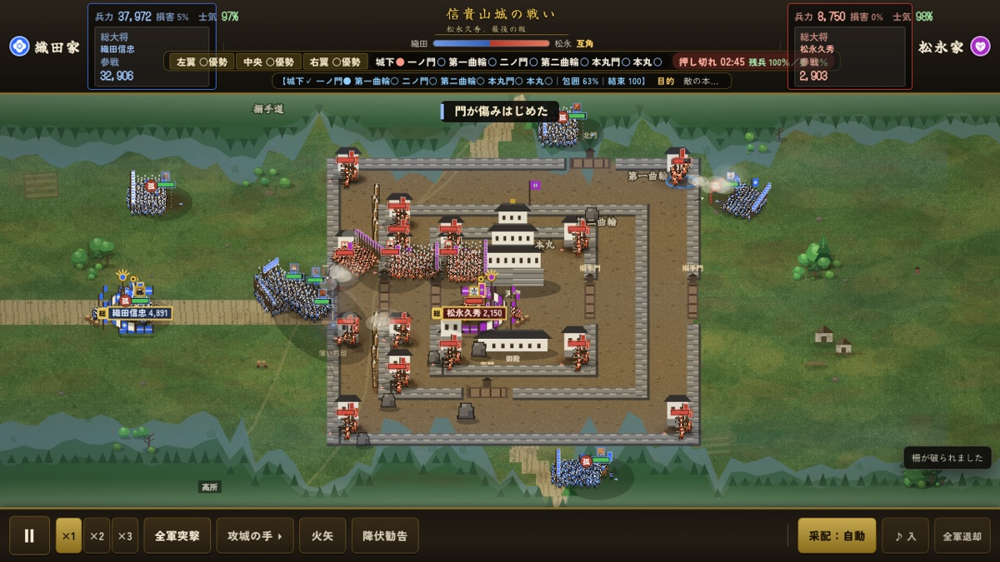
▶ 動く信貴山城の戦い
松永久秀、最後の叛
織田家 対 松永家
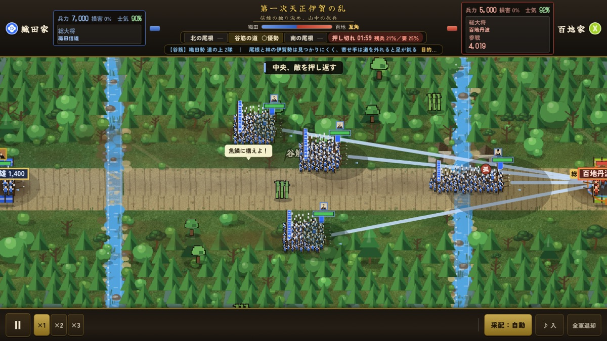
▶ 動く第一次天正伊賀の乱
信雄の独り決め、山中の伏兵
織田家 対 百地家
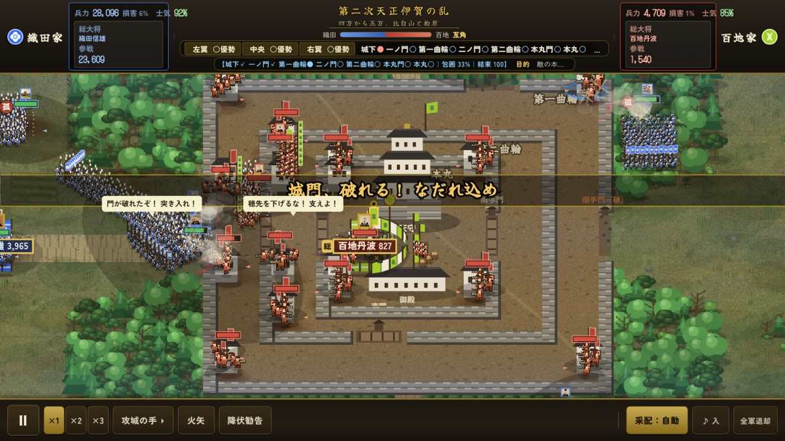
▶ 動く第二次天正伊賀の乱
四方から五万、比自山と柏原
織田家 対 百地家
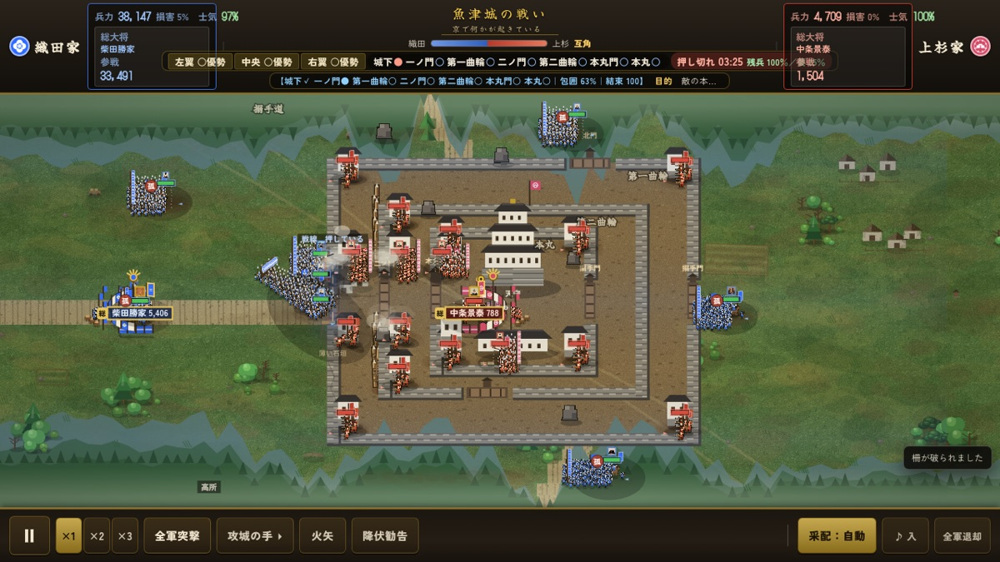
▶ 動く魚津城の戦い
京で何かが起きている
織田家 対 上杉家
長篠の戦い ── くわしい攻略（守る側・攻める側）
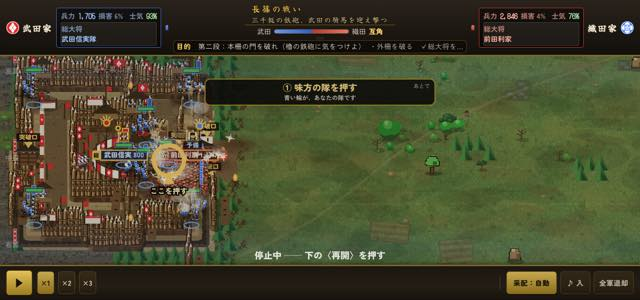
後詰が設楽原に着くと、決戦の軍議「設楽原の備え」が開きます。
織田・徳川（守る側）
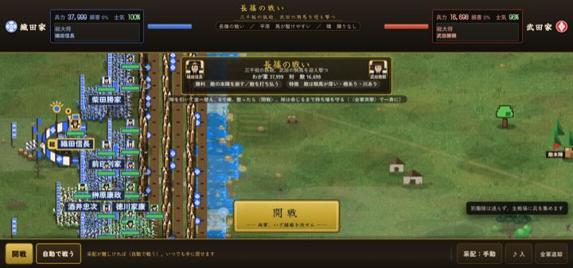
「設楽原の備え」は三つの型から選びます。迷ったら〈史実寄り〉。細かい設定は「詳しく」を開くと変えられます。
| 型 | 中身 | 向いている人 |
|---|
| 史実寄り | 三列の馬防柵、鉄砲を柵の内、酒井の別働隊が鳶ヶ巣を衝く | 初めての人。一番勝ちやすい |
| 攻撃的 | 柵は薄く、騎馬と侍で押し出す | 早く終わらせたい人 |
| 防御重視 | 柵を厚く、鉄砲で削る。持久 | 損を減らしたい人 |
武田の騎馬が柵に達すると止まり、柵の内から鉄砲が撃ちます。騎馬は柵で兵を減らしませんが、突撃が止まって士気が落ちます。
- 柵の内から撃つ。鉄砲は柵越しに撃てます。柵の外に出さない
- 柵が破られたら、破れ目に侍か足軽を入れる。騎馬が入ってくる所は「突破口」の印が出ます
- 武田の宿将（山県・馬場・内藤）が崩れると武田全体の士気が落ちます。「重傷」の帯が出た隊を追い討ちすると討ち取れます
- 勝頼が退き始めたら深追いしない。追い討ちは騎馬と侍だけで
武田が崩れると勝頼は退きます。追い討ちは限られた隊で。
鳥居強右衛門（長篠城の使者）
長篠城で遊ぶと、囲まれた城から使者を岡崎へ走らせる一幕があります。哨戒の松明の向く先（扇）に入らないように、草むらと夜闇を選んで抜けます。抜ければ援軍の報せが城に届き、士気が保たれます。捕まれば城の士気が落ちます。
武田（攻める側）で勝つには
- 軍議「設楽原、攻め方を決める」で左翼か右翼に寄せる。柵の薄い所を選ぶ
- 足軽で柵を崩す（千五百の隊で柵一本に一分ほど）。崩れた所へ騎馬を入れる
- 鉄砲隊の前に騎馬を出さない。雨を待つと鉄砲が黙る（天候は運）
- 宿将を失わないこと。「手傷を負い退く」隊は下げる
- 勝てないと見たら退き陣。道は主要街道・山道・川沿い・遠回り。殿は三隊まで。勝頼を生かせば家は続きます
- 決戦を避けて長篠城を落とす道もあります（家中は揺れますが兵は残ります）
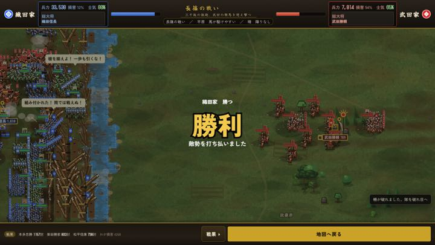
戦の結果。討ち取った将、損害、戦功が並びます。
筋書き
桶狭間の戦い
永禄三年（1560年）五月
永禄三年五月。今川義元二万五千が尾張へ。織田信長は三千。天候と奇襲で覆したあとは、川中島・三方ヶ原・長篠・信長包囲網の出来事がそのまま続く、いちばん長い筋書き。
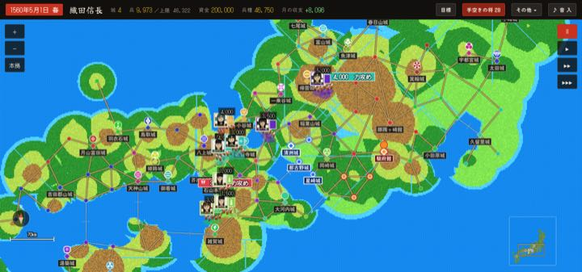
始まりの地図。遊べる家は、筋書きを選んだ次の画面で
序盤の指針
- 織田家なら、鷲津・丸根の砦は見捨てて兵を清洲に集め、今川本陣の位置を探る（物見・報せ）
- 雨が降ったら好機。本陣が見えた瞬間に全軍で突く
- 今川家なら、本陣を分散させず、織田の少数を数で押す
合戦の勘所
- 桶狭間：今川本陣の在処が「所在不明→位置判明」と絞られていく。判明してから駆けよ。義元は必ず討ち取れる
- 川中島：霧の間は両軍とも動かない。霧が晴れると車懸りが武田本陣へ、啄木鳥の別動隊が背後から戻る
- 三方ヶ原：徳川は追撃の隊形のまま、武田は魚鱗で押し出す。徳川なら本陣が危うくなったら早めに〈退き陣〉。武田なら家康を逃がすな（追え・退路を塞げ）
この筋書きで起こりうる決戦（25）
旗が立つと決戦になる。名を押すと拡大。絵はすべて実際のゲーム画面。
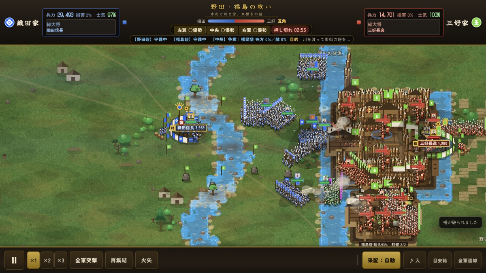
▶ 動く野田・福島の戦い
市街と川と砦、本願寺の鐘
織田家 対 三好家
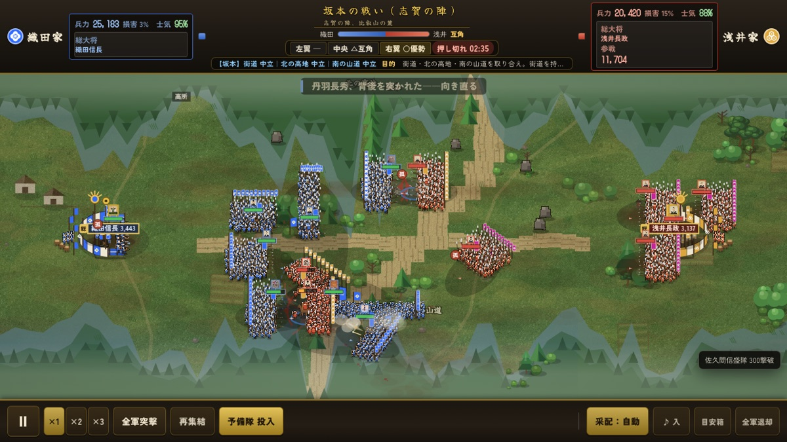
▶ 動く坂本の戦い（志賀の陣）
志賀の陣、比叡山の麓
織田家 対 浅井家
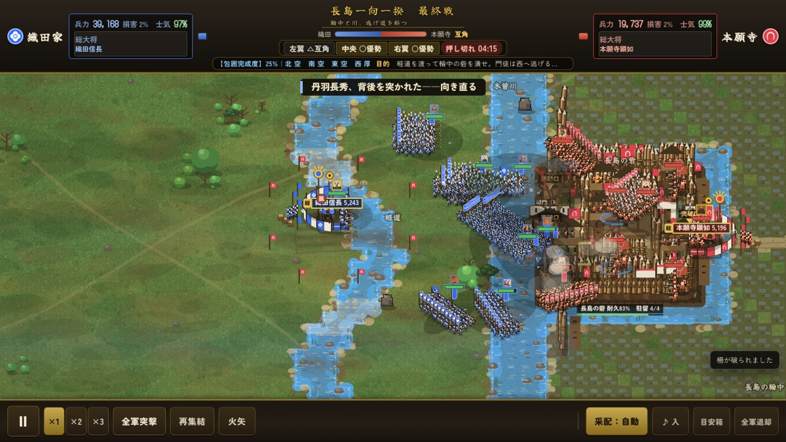
▶ 動く長島一向一揆 最終戦
輪中と川、逃げ道を断つ
織田家 対 本願寺
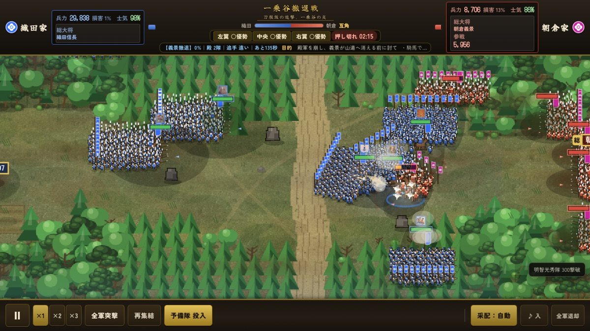
▶ 動く一乗谷撤退戦
刀根坂の追撃、一乗谷の炎
織田家 対 朝倉家
▶ 動く耳川の戦い
九州三強の勢力図が変わる
大友家 対 島津家
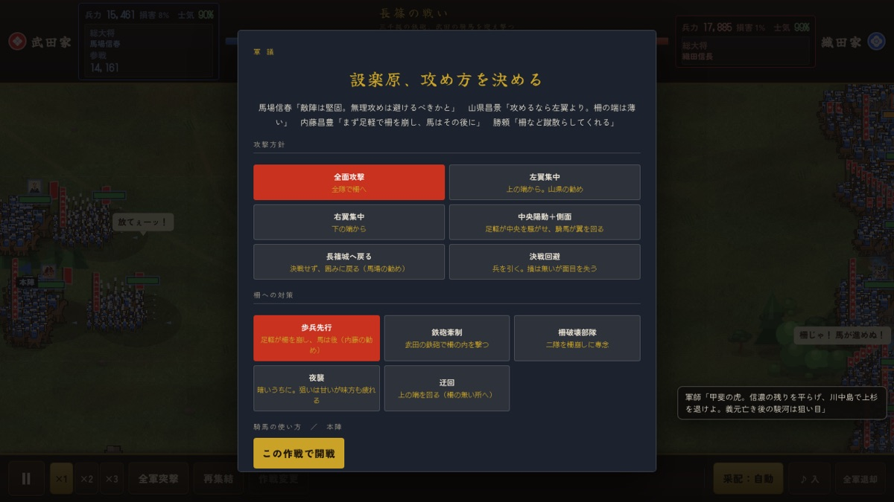
▶ 動く長篠の戦い
三千挺の鉄砲、武田の騎馬を迎え撃つ
武田家 対 織田家
▶ 動く岩村城の戦い
長篠の後、武田の東美濃
織田家 対 武田家
▶ 動く七尾城の戦い
能登の山城、内から崩れる
上杉家 対 長家
▶ 動く信貴山城の戦い
松永久秀、最後の叛
織田家 対 松永家
▶ 動く第一次天正伊賀の乱
信雄の独り決め、山中の伏兵
織田家 対 百地家
▶ 動く第二次天正伊賀の乱
四方から五万、比自山と柏原
織田家 対 百地家
▶ 動く魚津城の戦い
京で何かが起きている
織田家 対 上杉家
筋書き
信長包囲網
元亀元年（1570年）六月
浅井の裏切りで金ヶ崎から逃げ帰った信長が、姉川で浅井・朝倉に挑む。三好・本願寺・武田が次々に敵へ回る、いちばん長い筋書き。
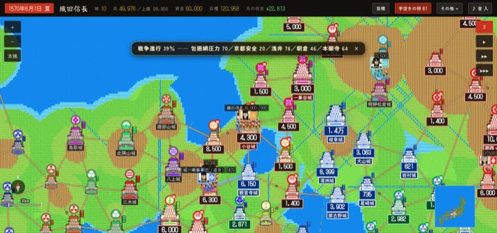
始まりの地図。遊べる家：織田家（織田信長）、北畠家（北畠具房）、浅井家（浅井長政）、朝倉家（朝倉義景）、徳川家（徳川家康）、武田家（武田信玄）、上杉家（上杉謙信）、北条家（北条氏康）、三好家（三好長逸）、本願寺（本願寺顕如）、松永家（松永久秀）、毛利家（毛利元就） ほか
序盤の指針
- まず金ヶ崎の退き口を生き延びる。殿（しんがり）は木下・池田に任せ、本隊は先に
- 姉川の前に横山城の囲みを決める（厚く／最低限／全軍へ）。囲みを薄くすると本戦は強いが城兵が背後に現れる
- 姉川のあとは野田・福島、志賀の陣、長島、小谷と続く。兵と米を切らさないよう、清洲・岐阜の普請と徴兵を回す
- 本願寺と武田が動く前に、浅井・朝倉のどちらかを片付けるのが筋
合戦の勘所
- 姉川：川を挟んだ激突。浅瀬を渡る翼と、徳川の別戦線を支える翼を分ける
- 小谷城攻め：曲輪の城。門を順に破りながら本丸へ。〈攻城の手〉と〈火矢〉
この筋書きで起こりうる決戦（24）
旗が立つと決戦になる。名を押すと拡大。絵はすべて実際のゲーム画面。
▶ 動く野田・福島の戦い
市街と川と砦、本願寺の鐘
織田家 対 三好家
▶ 動く坂本の戦い（志賀の陣）
志賀の陣、比叡山の麓
織田家 対 浅井家
▶ 動く長島一向一揆 最終戦
輪中と川、逃げ道を断つ
織田家 対 本願寺
▶ 動く一乗谷撤退戦
刀根坂の追撃、一乗谷の炎
織田家 対 朝倉家
▶ 動く耳川の戦い
九州三強の勢力図が変わる
大友家 対 島津家
▶ 動く長篠の戦い
三千挺の鉄砲、武田の騎馬を迎え撃つ
武田家 対 織田家
▶ 動く岩村城の戦い
長篠の後、武田の東美濃
織田家 対 武田家
▶ 動く七尾城の戦い
能登の山城、内から崩れる
上杉家 対 長家
▶ 動く信貴山城の戦い
松永久秀、最後の叛
織田家 対 松永家
▶ 動く第一次天正伊賀の乱
信雄の独り決め、山中の伏兵
織田家 対 百地家
▶ 動く第二次天正伊賀の乱
四方から五万、比自山と柏原
織田家 対 百地家
▶ 動く魚津城の戦い
京で何かが起きている
織田家 対 上杉家
筋書き
甲州征伐
天正九年（1581年）一月
高天神城は徳川に囲まれ、勝頼は新府の築城に国を疲れさせる。木曽が揺れ、穴山が揺れ、翌年、織田の大軍が甲斐へ。
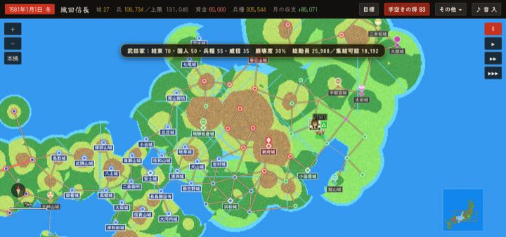
始まりの地図。遊べる家：宇喜多家（宇喜多秀家）、織田家（織田信長）、武田家（武田勝頼）、徳川家（徳川家康）、北条家（北条氏政）、上杉家（上杉景勝）、毛利家（毛利輝元）、長宗我部家（長宗我部元親）、伊達家（伊達輝宗）
序盤の指針
- 織田家なら、木曽・穴山の寝返りを待って一気に。高遠城が最後の砦
- 武田家なら、国人の離反を防ぐために民忠と兵の手当てを。高天神を見捨てれば士気が落ちる
合戦の勘所
- 高遠城：山城。一ノ門・二ノ門・本丸と、門を一つずつ。〈攻城の手〉で門へ集中攻撃
- 天目山：勝頼の最期。少数で逃げ切るか、討って出るか
この筋書きで起こりうる決戦（4）
旗が立つと決戦になる。名を押すと拡大。絵はすべて実際のゲーム画面。
▶ 動く人取橋の戦い
若き政宗、包囲網に耐える
佐竹家 対 伊達家
▶ 動く沖田畷の戦い
大軍を狭い場所へ誘い込む
龍造寺家 対 島津家
筋書き
本能寺の変
天正十年（1582年）六月
信長は本能寺に斃れた。京を抑えた明智光秀と、中国大返しの羽柴秀吉。天下の行方は山崎で決まる。
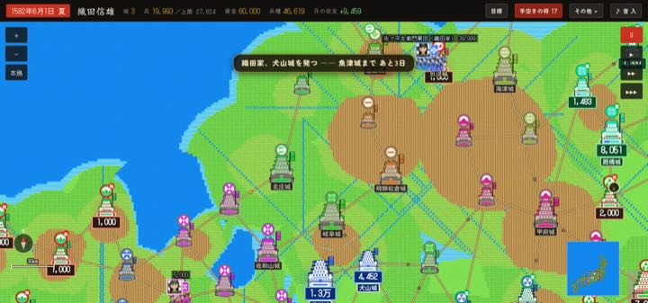
始まりの地図。遊べる家：明智家（明智光秀）、筒井家（筒井順慶）、羽柴家（羽柴秀吉）、宇喜多家（宇喜多秀家）、柴田家（柴田勝家）、前田家（前田利家）、佐々家（佐々成政）、織田家（織田信雄）、神戸家（織田信孝）、丹羽家（丹羽長秀）、池田家（池田恒興）、滝川家（滝川一益） ほか
序盤の指針
- 羽柴家なら、備中から一気に東へ（大返し）。道中の城は味方に付けて兵を膨らませる
- 明智家なら、山崎の前に筒井・細川を味方に引き込めるかが命。京の守りを固め、天王山を先に取る
- 山崎のあとは清洲会議、そして賤ヶ岳へ続く
合戦の勘所
- 山崎：天王山を取れば鉄砲が伸び、側面の道が開く。高所を先に。中央を押し切るなら羽柴の増援が効く頃まで粘る
- 神流川：北条五万が上野の滝川一益へ。一益なら退き口を作りながら削る。北条なら数で包む
- 山崎に勝ったあと、堀秀政を安土へ向けると安土城の戦い→打出浜の追撃戦と続く（秀吉の選択）
- 黒駒：北条氏忠が郡内から甲斐へ。徳川なら鳥居元忠の二千で受けるか、甲府に籠るか
この筋書きで起こりうる決戦（23）
旗が立つと決戦になる。名を押すと拡大。絵はすべて実際のゲーム画面。
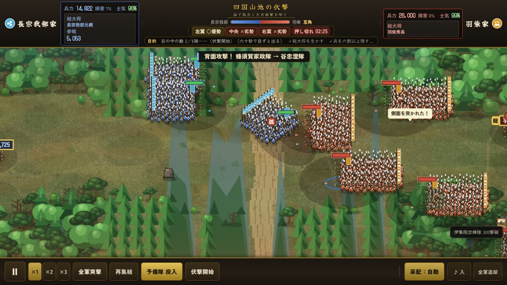
▶ 動く四国山地の伏撃
谷で孤立した方面軍を叩く
長宗我部家 対 羽柴家
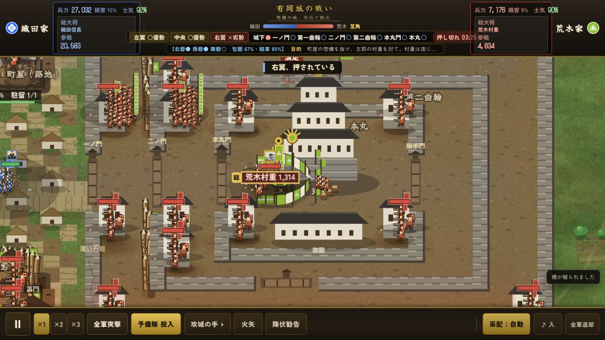
▶ 動く北ノ庄城の戦い
勝家とお市、最後の城
羽柴家 対 柴田家
▶ 動く根白坂の戦い
豊臣の陣地へ、島津最後の総攻め
島津家 対 豊臣家
▶ 動く人取橋の戦い
若き政宗、包囲網に耐える
佐竹家 対 伊達家
▶ 動く阿波・一宮城の戦い
長宗我部、最後の抵抗
羽柴家 対 長宗我部家
▶ 動く沖田畷の戦い
大軍を狭い場所へ誘い込む
龍造寺家 対 島津家
▶ 動く摺上原の戦い
伊達政宗、南奥州の主へ
伊達家 対 蘆名家
▶ 動く第一次上田合戦
二千で七千を退ける
徳川家 対 真田家
▶ 動く魚津城の戦い
京で何かが起きている
織田家 対 上杉家
筋書き
関ヶ原の戦い
慶長五年（1600年）六月〜九月十五日 ¥500 で解除
秀吉亡きあと天下は東西に割れた。導入の三枚のあと、前哨戦（伏見・岐阜・大津・田辺・長谷堂・安濃津・白石・杭瀬川）を経て、大垣の軍議、関ヶ原の本戦へ。西軍は「寄せ集めをまとめる」、東軍は「勢いを切らさず押し切る」。終われば「自分の関ヶ原」の年表が出る。
始まりの地図。遊べる家：徳川家（徳川家康）、石田家（石田三成）、豊臣家（豊臣秀頼）、宇喜多家（宇喜多秀家）、毛利家（毛利輝元）、上杉家（上杉景勝）、島津家（島津義弘）、長宗我部家（長宗我部盛親）、小早川家（小早川秀秋）、前田家（前田利長）、伊達家（伊達政宗）、最上家（最上義光） ほか
序盤の指針
- 徳川なら江戸で兵を集めつつ、東海道の諸城を味方に付ける。西軍なら大坂と岐阜を固める
- 前哨戦のひとつひとつが本戦の兵力と士気に響く。岐阜城を落とすと東軍の勢いが増す
- 小早川ら日和見の家は本戦の途中で動く。松尾山の帯（東 〜）を見て、威嚇射撃で揺さぶれる
合戦の勘所
- 決戦の前に軍議。西軍は宇喜多（早期決戦）・三成（足並み）・大谷（松尾山警戒）・島津（夜襲）の案から、東軍は本多（中央突破）・福島（先陣）・黒田（松尾山へ催促）・井伊（南宮山の押さえ）・家康（予備温存）の案から選ぶ。採った案は結束と諸将の満足、布陣、戦場の動きに効く
- 西軍の諸将には「満足」がある（目標の札で見える）。三十五を切った大名は攻められるまで動かず、五十未満は伝令が遅い。軍議で案を採れば上がり、退ければ下がる
- 帯の〈物見〉で松尾山の傾き・南宮山の見込み・敵の予備の数が分かる（六十秒に一度）。前哨戦のあとは「功を賞する」――賞した大名の満足は上がり、賞さなければ皆下がる。連戦の疲れは次の戦へ持ち越す（一日に四ずつ抜ける。大垣に籠れば休める）。八月を過ぎるごとに西軍の守りは厚くなる（東軍は急げ）
- 松尾山の小早川は「西軍寄り→静観→動揺→東軍寄り→参戦準備→参戦」と動く。旗が動いたら数秒のうちに山を下り、大谷隊の横腹へ来る。大谷を松尾山の麓に置いておけば耐える
- 本戦の前に、安濃津城（毛利の伊勢攻め）・白石城（政宗が上杉の背を突く）・杭瀬川（島左近が東軍の鼻先を叩く）の三つの前哨戦が旗を立てる。出るか見送るかは自分で決められる
- 本戦は六つの局面（布陣→主力戦→膠着→松尾山→一角崩壊→総崩れ）。開戦は朝霧で、晴れるまで（十四秒、島津の夜襲案なら四十秒）両軍とも動けない。中央を支えつつ、崩れた一角へ後ろの隊を回す
- 東軍は家康以下二十四家、西軍は三成以下二十四家が並ぶ。南宮山の毛利・吉川・安国寺・長束・長宗我部は動かず、松尾山の麓の脇坂・朽木・小川・赤座は小早川に従う。石田方は〈小早川へ出撃催促〉で秀秋を西軍として下ろせることがある（一度きり）
- 秀忠の本隊は中山道を六日かけて上田へ来て、翌日に必ず上田城を攻める。上田はきわめて堅く、八割方は退けられて上田を囲んだまま動けない（関ヶ原は本隊抜き）。落とせれば秀忠は関ヶ原へ急ぎ、間に合えば東軍に二万が加わる
- 西軍なら大谷・宇喜多の粘りで時を稼ぎ、東軍の本陣が前に出た所を突く
この筋書きで起こりうる決戦（20）
旗が立つと決戦になる。名を押すと拡大。絵はすべて実際のゲーム画面。
▶ 動く関ヶ原の戦い
天下の行方、ここに決す
徳川家 対 石田家
▶ 動く岐阜城の戦い（慶長五年）
先陣は譲らぬ
福島家 対 織田家
▶ 動く大津城の戦い
西軍を釘付けにする城
立花家 対 徳川家
▶ 動く杭瀬川の戦い
左近、東軍の鼻先を叩く
石田家 対 徳川家
▶ 動く白石城の戦い
政宗、上杉の背を突く
伊達家 対 上杉家
▶ 動く佐和山城の戦い
本戦の後、三成の居城
徳川家 対 石田家
▶ 動く水口城の戦い
本戦の後、西軍の後始末
徳川家 対 石田家
筋書き
大坂の陣
慶長十九年（1614年）冬 〜 慶長二十年（1615年）夏
方広寺の鐘銘から戦へ。冬の陣（大坂城の堀と真田丸をめぐる籠城）から始まり、和睦と堀の埋め立てを経て夏の陣（城を出て野で徳川と決する）へ、一つの流れで遊ぶ。
始まりの地図。遊べる家：徳川家（徳川家康）、豊臣家（豊臣秀頼）、前田家（前田利常）、伊達家（伊達政宗）、上杉家（上杉景勝）、最上家（最上義俊）、毛利家（毛利輝元）、島津家（島津忠恒）、鍋島家（鍋島勝茂）、黒田家（黒田長政）、加藤家（加藤嘉明）、山内家（山内忠義） ほか
序盤の指針
- 徳川家なら、冬は真田丸に手を出さず外郭の砦（今福・博労淵）を落として堀を埋めさせる
- 豊臣家なら、真田丸で徳川を削り、和睦で堀を埋められる前に有利な条件を
- 夏は道明寺・八尾若江・天王寺岡山と続く野戦。兵を分けすぎない
合戦の勘所
- 真田丸（冬の陣）：大坂城の惣構から突き出した台形の出丸。本体とは惣構の堀で切れ、狭い土橋（大坂城接続路）だけでつながる。外周は全部が空堀と三列の土塁、正面は逆茂木の帯で、通れる道は正面主攻路と北・南の副攻路の三本だけ。左右の翼（左翼櫓・右翼櫓）が正面より前に突き出していて、主門・北攻め口・南攻め口の前に入った敵を横から撃つ（横矢危険区域）。空堀に入った隊は遅く守りが薄い（空堀減速区域）、柵の前で詰まった隊が一斉射撃の的（集中射撃区域）。門を破られても門裏防衛線と土塁上の鉄砲で挟める。内部は指揮所・弾薬庫・予備兵待機所。〈撃て！〉の一斉射撃は敵を柵の前まで引きつけてから。弾薬は開戦時に左・中央・右へ配分、〈交代〉で疲れた隊を予備と入れ替える。信繁が砦の内にいる間は周りの隊が崩れにくい（出撃すると緩む）。徳川で攻めるなら、櫓を先に潰して横矢を止め、予備隊を交代で入れ、敵の玉込めが遅れた隙に突入
- 道明寺：霧の中の遭遇戦。五つの局面がある。後藤の隊が孤立しないよう本隊を急がせる
- 天王寺・岡山：真田の本陣突撃。家康本陣までの距離が帯に出る。予備隊で受ける
この筋書きで起こりうる決戦（13）
旗が立つと決戦になる。名を押すと拡大。絵はすべて実際のゲーム画面。
▶ 動く大坂冬の陣 真田丸の戦い
冬の陣の主戦。突き出した出丸の攻防
徳川家 対 豊臣家
▶ 動く大坂夏の陣 道明寺の戦い
夏の陣、その二
徳川家 対 豊臣家
▶ 動く大坂冬の陣・外郭戦（木津川口・博労淵）
外郭の陣地が削られる
徳川家 対 豊臣家
▶ 動く八尾・若江の戦い
道明寺と天王寺の間
徳川家 対 豊臣家
▶ 動く大坂城 最終局面
大坂城、最後の朝
徳川家 対 豊臣家
▶ 動く大坂夏の陣 天王寺・岡山の戦い
豊臣、最後の総攻め
徳川家 対 豊臣家
▶ 動く野田・福島の戦い（冬の陣）
冬の陣、淀川の中州
徳川家 対 豊臣家
▶ 動く誉田・小松山の戦い
夏の陣、道明寺の続き
徳川家 対 豊臣家
▶ 動く安居神社 真田信繁 最期
夏の陣、真田最期
徳川家 対 豊臣家